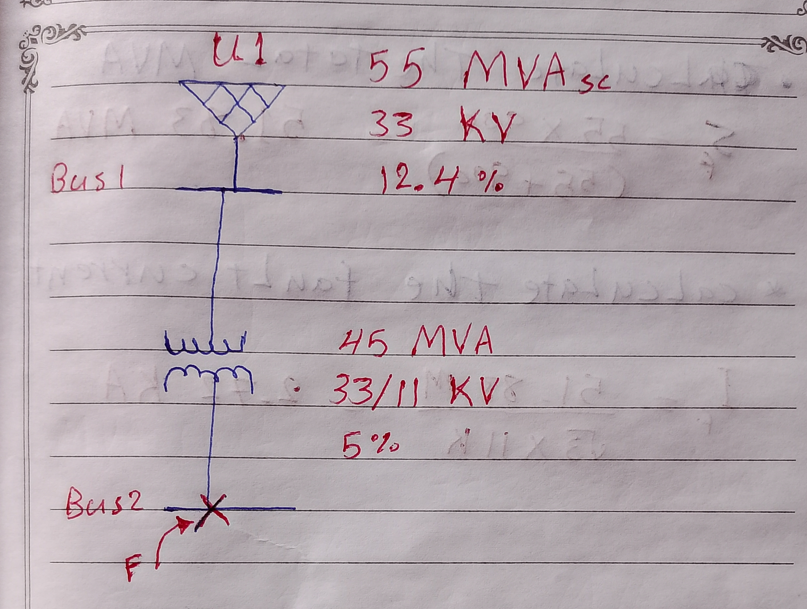
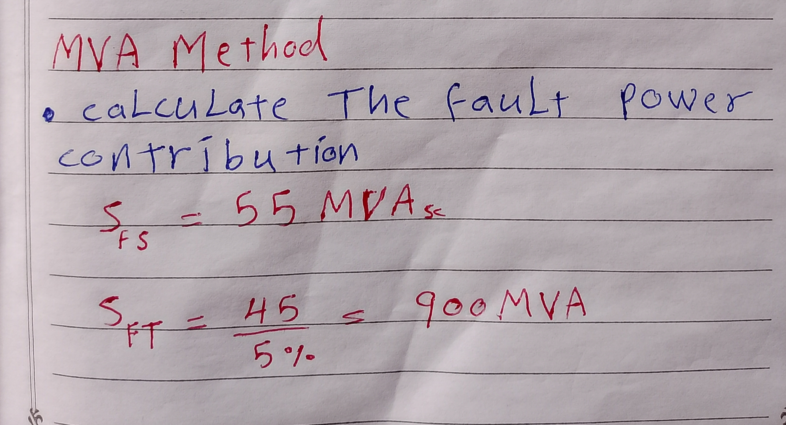
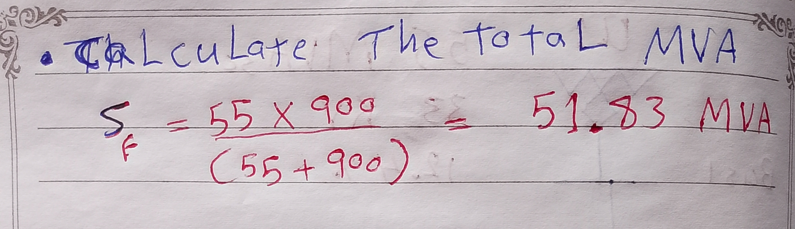
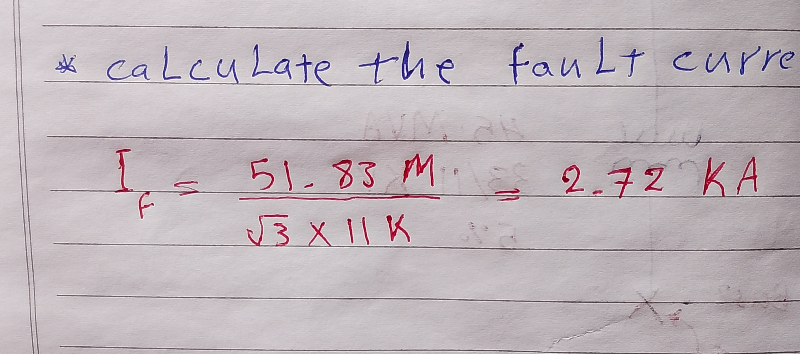

-
Hand Calculation of a Three-Line-to-Ground Fault Using the MVA Method
2026-07-02
In this article, I will calculate a three-line-to-ground fault and estimate the short-circuit current using the MVA method. The MVA method is one of the simplest techniques used in power system fault analysis.
From the system below, we are going to calculate the fault current using these simple steps:
First, calculate the fault power contribution.
>
Second, calculate the total MVA.
Note that we add them up like admittances (the reciprocal of impedance) because the MVA method works with admittance.
>
Finally, calculate the fault current.
>
Conclusion
The MVA method is a very simple yet powerful tool to add to your toolbox. As engineers, we love performing these calculations to make sure everything is right.